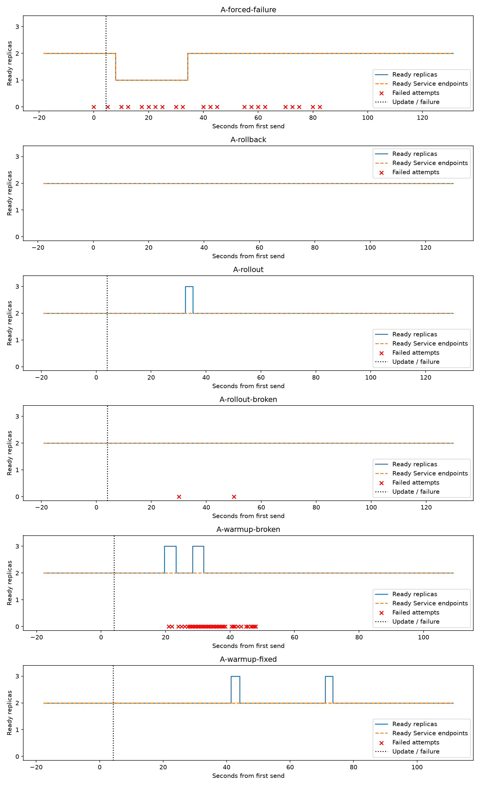
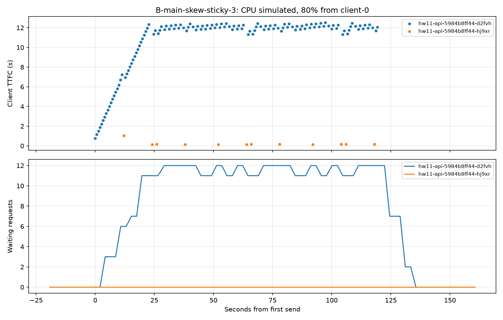
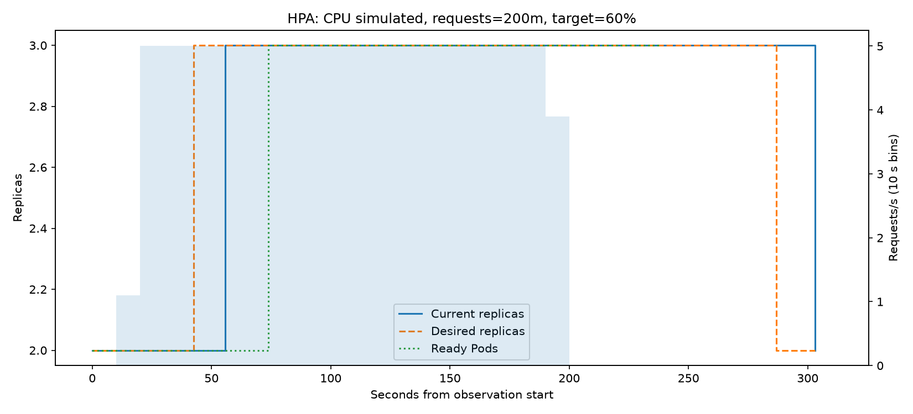

Все обязательные опыты завершены; проверки кода и сырых доказательств пройдены.
backend_mode=simulated. TTFC и inter-chunk latency относятся к частям ответа CPU-имитатора, а не токенам модели.
Код: 9f7309c, ветка codex/hw11. Хеши service.py, loadgen.py и uv.lock сверены с записью перед опытами; результаты относятся к тому же backend и генератору.
Продолжен FastAPI-сервис ДЗ 8–10: фабрика приложения, внедряемый backend, проверка загруженного артефакта и валидация до генерации. Новый CPU-имитатор явно возвращает backend_mode=simulated. История передаётся в запросе, локальный кеш не содержит единственной копии диалога.
Windows 11, Docker Engine 28.5.1, 4 CPU и 7,74 GiB RAM для Docker; kind 0.33.0, Kubernetes 1.35.0, Helm 4.3.2. Две реплики API: requests 200m/96Mi, limits 1 CPU/256Mi. Максимум одна активная генерация, 12 ожидающих, тайм-аут очереди 15 с. Прогрев 20 с. LRU-кеш: 16 ключей, hit 0,025 CPU-с, miss 0,20 CPU-с; каждая часть требует 0,003 CPU-с и задержку 0,12 с. Основная нагрузка B: 8 частей, 1,5 запроса/с, 120 с, 180 запланированных запросов. При skew 144/180 приходятся на client-0.
Перед каждым B-прогоном заменяются обе реплики; кеш пуст, прогрев окончен. Сравниваемые политики получают одинаковые входы и относительные расписания (seed=42), три повтора каждой комбинации. Клиенты — четыре Pod с разными IP; kube-proxy работает в режиме iptables. Keep-alive отключён, каждый запрос открывает новое TCP-соединение. Service ClientIP сохраняет выбор за IP, обычный Service выбирает backend для нового соединения. Это не обещание идеального round-robin.
Артефакты A/B — небольшие JSON-файлы в неизменяемой ConfigMap. Процесс проверяет SHA-256 до прогрева и сообщает загруженную версию из памяти. Отдельная ConfigMap каждой конфигурации сохраняется для rollback. В старом Pod версия не переключается при обновлении Deployment. Для реальных весов потребовался бы общий доступный источник с закреплённым хешем, а не локальный диск одного Pod.
Ранняя готовность проверяется отдельным дефектным режимом early_ready: HTTP уже доступен, а backend ещё холодный. В исправленном варианте startup ожидает окончания прогрева, readiness дополнительно учитывает drain, liveness проверяет живой HTTP event loop. Таймлайны Ready/EndpointSlice и серверные события received/warmup_finished сохраняются рядом с запросами. До исправления: 100/140 завершённых, 40 отказов; после исправления: 140/140 завершённых, ноль отказов, обрывов и тайм-аутов.
Обрыв при rollout воспроизводится grace period 1 с. Исправление: 60 с, preStop исключает Pod из приёма новых запросов и ждёт 5 с распространения состояния; uvicorn получает до 45 с на завершение активных ответов. Одинаковая нагрузка в обоих вариантах: 90 с, 0,1 запроса/с, 100 частей. Поток, начатый до обновления A→B, должен пересечь его начало. Отдельно проверяются неготовая B, управляемый Helm rollback, замена Pod с восстановлением истории и SIGKILL процесса с регистрацией обрыва. При grace period 1 с завершились 7/9 ответов, два потока HTTP 200 оборвались после 24 и 65 частей из 100. При grace period 60 с завершились 9/9, ноль отказов, обрывов и тайм-аутов. Сырые строки позволяют отличить успешное открытие HTTP-соединения от успешного завершения потока.
При откате выполнены 90/90 запросов без ошибок, каждый вернул sim-A. Неготовая B присутствовала в EndpointSlice с ready=false и не получала рабочий трафик. После замены Pod сохранены версия sim-A и SHA-256 490eeb043a9b…; история ALPHA восстановлена, в другом диалоге BETA её нет. Полные хеши и ответы: results/A-recovery/verification.json.
Принудительный SIGKILL: 14 из 36 попыток завершены, 20 отклонены, две прерваны, тайм-аутов нет. После перезапуска проверочный запрос получил HTTP 200. Здесь длинные ответы намеренно перегружают ограниченную очередь: все 20 отказов нельзя приписывать одному SIGKILL. Отдельные строки и статусы сохраняют различие между оборванным HTTP 200 и ошибкой транспорта до получения заголовков.
Гипотеза: ClientIP снижает повторный prefill, но закрепляет перекос. При ограниченном числе клиентов возможно даже совпадение всех назначений. Исправление для данного стенда — отключить ClientIP, сохранив одинаковый backend, его лимиты и входную нагрузку. Это уступает настоящей маршрутизации с учётом кеша и очереди: у обычного Service нет знаний о стоимости prefill. Вывод о преимуществе проверяется по p95, отказам и распределению каждого повторения, а не только по усреднённому CPU.
Пилоты B-uniform-*/B-skew-* при 1,6 запроса/с сохранены отдельно: 192 запроса дают 81,25% горячего клиента. Они не смешиваются с основной матрицей B-main-* с точными 80%. Пилот равномерной нагрузки без перекоса тоже сохранён: ClientIP распределил запросы 96/96 и оказался быстрее обычного Service в том повторе. Это ограничивает вывод «affinity всегда хуже».
При 80% запросов от одного клиента ClientIP дал p95 TTFC 12,481 / 12,553 / 12,409 с и 31 / 42 / 40 отказов из 180. Обычный Service: 2,620 / 4,344 / 1,277 с, во всех трёх повторах 180/180 завершённых ответов. Распределение ClientIP: 156:24, 168:12, 168:12; без affinity: 96:84, 78:102, 87:93. Это показывает, что закрепление горячего IP перегружает одну очередь.
При равномерной нагрузке ClientIP во всех повторах распределил 90:90, получив p95 0,432 / 1,419 / 0,249 с. Без affinity p95 2,513 / 3,677 / 3,045 с: случайное распределение соединений создаёт короткие очереди и снижает локальность кеша. Отказов здесь нет в обеих политиках. Выбор обычного Service обоснован устойчивостью к перекосу, но ценой задержки на равномерной нагрузке. Три отдельных p95 сохранены; их среднее не выдаётся за общий p95.
HPA autoscaling/v2: минимум 2, максимум 3, target CPU 60% от request=200m; окно scaleDown 60 с. Для вычислительной нагрузки стоимость cache hit повышена до 0,3 CPU-с, miss до 0,4 CPU-с, части до 0,01 CPU-с при задержке 0,02 с. Подаётся 5 запросов/с на 180 с. Это отдельный режим того же имитатора; его задержки не сравниваются с B как эффект одного HPA. Повтор с ClientIP проверяет, получает ли добавленная реплика работу от уже закреплённых клиентов.
HighTTFC: p95 > 1,5 с, не менее 10 завершённых наблюдений за 30 с, удержание 15 с. HighRejections: доля отказов > 10%, не менее 10 терминальных исходов за 30 с, удержание 15 с. Подтверждения pending/firing/normal находятся в timeline.jsonl; настройка и правила экспортированы в monitoring/.
Обычный Service: третья реплика создана через 23,28 с от начала отправок, Ready через 55,28 с (32 с от создания); получила 195 из 900 запросов. 777 ответов завершены, 123 отклонены. Возврат currentReplicas к двум впервые зафиксирован через 105,32 с после последней отправки. При ClientIP новая реплика создана через 31,08 с, Ready через 58,08 с (27 с от создания), но не получила ни одного запроса: существующие IP остались закреплены, распределение 840:60:0. Завершены 381/900, отклонены 519; возврат к двум — через 92,66 с после последней отправки. Обрывы и тайм-ауты в обоих C-прогонах — 0.
HPA реагирует на среднюю CPU-утилизацию относительно requests. При достаточной нагрузке одного Pod эта средняя превышает 60%, даже если сосед простаивает; добавленная ёмкость сама по себе не меняет ClientIP-назначения. Фактическое снижение занимает больше scaleDown window 60 с из-за оставшейся работы, окна измерения CPU и периодов контроллера. Состояния HPA и времена Pod сохранены в results/hpa-analysis.json и исходных timeline/downscale.
Оба алерта прошли pending → firing → normal. Например, в B-main-skew-sticky-3 наблюдаемый интервал pending→firing: HighTTFC 15,99 с, HighRejections 15,49 с. Разница с for=15s обусловлена scrape/evaluation и дискретным опросом. Полные времена UTC и ссылки на прогоны — results/alert-transitions.json.
В основной серии B исходный bucket 12–20 с оказался слишком широким: для skew-sticky-1 клиентский p95 равен 12,481 с, оценка гистограммы — 18,854 с. Число наблюдений совпадает: 149. Причина — линейная интерполяция внутри широкого bucket. Для последующих опытов добавлены границы с шагом 0,5 с около 12–14 с; исходные B-данные и конфигурация сохранены без подмены. В отдельном прогоне metrics-refined-buckets число наблюдений совпало: 150 у клиента и Prometheus. Клиентский p95 12,322 с, гистограмма 12,396 с: расхождение 0,073 с (0,60%). В исходном прогоне расхождение было 6,373 с (51,06%); это сравнение двух способов расчёта внутри каждого своего прогона, а не сравнение скорости backend между разными популяциями.
Первый запуск A/C остановился до измерений: Helm 4 обнаружил конфликт владения maxSurge после kubectl patch из B. В конце suite_b теперь возвращается исходное значение maxSurge=1 тем же менеджером. Это позволило выполнить обычный Helm upgrade. Исходные ошибки сохранены в results/setup-failure-helm-ownership. Семантика server-side apply описана в документации Helm.
До запуска свободно 80.16 GiB, после опытов 75.53 GiB: изменение всего диска около 4.63 GiB при бюджете 15 GiB. Это оценка с учётом другой активности Windows, а не точный эксклюзивный размер стенда. Docker сообщает 284 MB для API и 1,35 GB для kind-node; внутри узла containerd занимает около 2,4 GiB, kubelet — около 0,1 GiB. Эти величины пересекаются, их нельзя просто складывать. Снимки: results/environment/*final*.
Для удаления своего стенда: kind delete cluster --name mlops-hw11.
Сначала сохранить метрики и остановить port-forward. Команда пользователем
ещё не выполнялась; образы и build cache остаются. Подробности — docs/runbook.md.
Клиент измеряет интервалы perf_counter: TTFC=first−sent, полная длительность =end−sent, inter-chunk latency — последовательные разности моментов получения частей. Абсолютные часы UTC нужны только для сопоставления с Prometheus. Сохраняются запланированная и фактическая отправка, задержка генератора, статус, Pod, версия, число частей и терминальное событие done. В сводном журнале session_id производен от run/client: в контролируемом генераторе одна логическая сессия соответствует одному клиенту; исходные журналы сохраняют client и request_id без изменений. Это не предположение о пользователях за NAT. Повторы отключены: каждая строка — отдельная попытка. HTTP 200 без done считается обрывом.
Prometheus считает Histogram только для успешно завершённых ответов,
как клиентская таблица. Для сравнения берутся разности суммарных bucket-счётчиков
до/после прогона по фактически обслуживавшим Pod. Для стационарных прогонов B число наблюдений сверяется
точно; при рестартах в A/C простая разность счётчиков может терять события
и не используется как доказательство совпадения популяций; перцентили гистограммы приближённые из-за границ bucket.
Рабочий PromQL: histogram_quantile(0.95, sum by(le,pod)
(rate(hw11_ttfc_seconds_bucket[2m]))). Это не среднее перцентилей Pod.
Один локальный узел не доказывает отказоустойчивость между машинами. CPU-имитатор не измеряет TTFT, TPOT, tokens/s, реальный KV-cache, batching, GPU или качество языковой модели. Конкурирующая работа Windows и Kubernetes создаёт шум; три повтора и сырые журналы сохраняют его видимым. Новые TCP соединения исключают влияние долгоживущего keep-alive только для этих опытов.
Артефакты: таблица CSV, все запросы JSONL, результаты интеграционных сценариев, экспорт Grafana. Запуск и удаление: docs/runbook.md. Полнота: docs/status.md.
| run | planned | sent | completed | rejected | aborted | timeout | p50_ttfc_s | p95_ttfc_s | p95_duration_s | p95_send_lag_s | error_fraction | p95_inter_chunk_s |
|---|---|---|---|---|---|---|---|---|---|---|---|---|
| A-forced-failure | 36 | 36 | 14 | 20 | 2 | 0 | 9.8258 | 14.2853 | 26.7429 | 0.0172 | 0.6111 | 0.1305 |
| A-rollback | 90 | 90 | 90 | 0 | 0 | 0 | 0.1615 | 0.4841 | 0.485 | 0.0083 | 0.0 | None |
| A-rollout | 9 | 9 | 9 | 0 | 0 | 0 | 3.0749 | 10.974 | 23.4536 | 0.0311 | 0.0 | 0.1356 |
| A-rollout-broken | 9 | 9 | 7 | 0 | 2 | 0 | 0.9146 | 2.6133 | 15.0074 | 0.0351 | 0.2222 | 0.1298 |
| A-warmup-broken | 140 | 140 | 100 | 40 | 0 | 0 | 0.1641 | 0.7473 | 0.7486 | -0.0037 | 0.2857 | None |
| A-warmup-fixed | 140 | 140 | 140 | 0 | 0 | 0 | 0.1631 | 0.4096 | 0.4145 | 0.0113 | 0.0 | None |
| B-main-skew-normal-1 | 180 | 180 | 180 | 0 | 0 | 0 | 0.6942 | 2.62 | 3.4919 | 0.0056 | 0.0 | 0.1298 |
| B-main-skew-normal-2 | 180 | 180 | 180 | 0 | 0 | 0 | 0.9207 | 4.3438 | 5.2144 | 0.0097 | 0.0 | 0.1322 |
| B-main-skew-normal-3 | 180 | 180 | 180 | 0 | 0 | 0 | 0.5091 | 1.2772 | 2.179 | 0.0068 | 0.0 | 0.1259 |
| B-main-skew-sticky-1 | 180 | 180 | 149 | 31 | 0 | 0 | 11.5057 | 12.481 | 13.3589 | 0.0055 | 0.1722 | 0.1308 |
| B-main-skew-sticky-2 | 180 | 180 | 138 | 42 | 0 | 0 | 12.0451 | 12.553 | 13.4248 | 0.0057 | 0.2333 | 0.1313 |
| B-main-skew-sticky-3 | 180 | 180 | 140 | 40 | 0 | 0 | 11.8806 | 12.4089 | 13.2811 | 0.0007 | 0.2222 | 0.1259 |
| B-main-uniform-normal-1 | 180 | 180 | 180 | 0 | 0 | 0 | 0.6476 | 2.5128 | 3.3844 | 0.0052 | 0.0 | 0.1324 |
| B-main-uniform-normal-2 | 180 | 180 | 180 | 0 | 0 | 0 | 1.2116 | 3.6774 | 4.5641 | 0.0049 | 0.0 | 0.1343 |
| B-main-uniform-normal-3 | 180 | 180 | 180 | 0 | 0 | 0 | 0.6409 | 3.0452 | 3.93 | 0.002 | 0.0 | 0.1264 |
| B-main-uniform-sticky-1 | 180 | 180 | 180 | 0 | 0 | 0 | 0.1632 | 0.4322 | 1.3191 | 0.0046 | 0.0 | 0.1321 |
| B-main-uniform-sticky-2 | 180 | 180 | 180 | 0 | 0 | 0 | 0.5142 | 1.4185 | 2.3025 | 0.0002 | 0.0 | 0.1308 |
| B-main-uniform-sticky-3 | 180 | 180 | 180 | 0 | 0 | 0 | 0.1553 | 0.2489 | 1.1738 | 0.0075 | 0.0 | 0.1291 |
| B-skew-sticky-1 | 192 | 192 | 127 | 65 | 0 | 0 | 12.1702 | 12.5463 | 13.4224 | 0.0083 | 0.3385 | 0.1294 |
| B-uniform-normal-1 | 192 | 192 | 192 | 0 | 0 | 0 | 0.5921 | 2.0722 | 2.9437 | 0.0018 | 0.0 | 0.1295 |
| B-uniform-sticky-1 | 192 | 192 | 192 | 0 | 0 | 0 | 0.5518 | 0.8758 | 1.7595 | 0.0037 | 0.0 | 0.132 |
| C-hpa | 900 | 900 | 777 | 123 | 0 | 0 | 5.6126 | 8.4642 | 8.7605 | 0.0085 | 0.1367 | 0.0534 |
| C-hpa-sticky | 900 | 900 | 381 | 519 | 0 | 0 | 7.0803 | 7.6879 | 7.9353 | 0.0034 | 0.5767 | 0.0414 |
| metrics-refined-buckets | 180 | 180 | 150 | 30 | 0 | 0 | 11.1306 | 12.3225 | 13.1987 | 0.0069 | 0.1667 | 0.1263 |
Перцентили: линейная интерполяция отсортированных успешных ответов. Число наблюдений = completed. Inter-chunk latency: разности последовательных частей; для N частей N−1 интервалов, при N=1 отсутствует. В CSV сохранены также p50/p95 полной длительности и интервалов с их числом наблюдений. HTTP 200 без терминального done — оборванный поток. Повторы не выполняются. planned − sent — неотправленные запросы.



# Ревью: постоянная привязка диалога к Pod При заданных условиях новый запрос следует направить B: её ожидание и пересчёт занимают 0,8 с, тогда как очередь A уже добавляет 3 с до начала обработки. Это решение предполагает одинаковую загруженную версию, доступность полной истории и сопоставимое качество ответа. Префиксный кеш — ускоритель, а не единственный источник состояния диалога. Перед допуском нужны свежие оценки очереди, доступных слотов, CPU/GPU и KV-cache, стоимости prefill для конкретной длины входа, сетевой задержки и оставшегося deadline клиента. При устаревших метриках и одновременном выборе свободной B несколькими маршрутизаторами возникает новая очередь: допуск должен ограничивать число running/waiting и предсказуемо отказывать при исчерпанном бюджете. В нашем стенде история передаётся в каждом запросе; после потери A её можно повторно обработать на B с тем же хешем артефакта. Это потеря локального кеша, а не потеря диалога. На настоящем inference engine отдельно нужны проверки токенизатора, chat template, версий, изоляции KV-cache и поведения при длинных контекстах. CPU-имитатор этих свойств не доказывает. Уже начатый поток остаётся у A до завершения. Перенести HTTP-соединение в B посреди ответа нельзя. При штатном обновлении A перестаёт принимать новые запросы и завершает активные в пределах grace period. При аварии клиент помечает поток оборванным; повтор — отдельная попытка с явным решением, как показывать пользователю уже полученный фрагмент. Связь с лекцией: слайд 70 «Результаты нагрузки Google» (видео 08:22,5). В [первичном кейсе Google от 6 февраля 2026](https://cloud.google.com/blog/products/containers-kubernetes/how-gke-inference-gateway-improved-latency-for-vertex-ai) команда Vertex AI описывает баланс между кешем и очередью: веса scorer prefix:queue:KV изменили с 3:3:2 на 3:5:2 и применили admission control. Для DeepSeek V3.1 сообщается снижение p95 TTFT на 52%, а доля попаданий в префиксный кеш выросла с 35% до 70%. Это результаты Google, не нашего стенда. Они поддерживают отказ от безусловной постоянной привязки.
Источники: Google / Vertex AI; Kubernetes probes; Prometheus histograms.